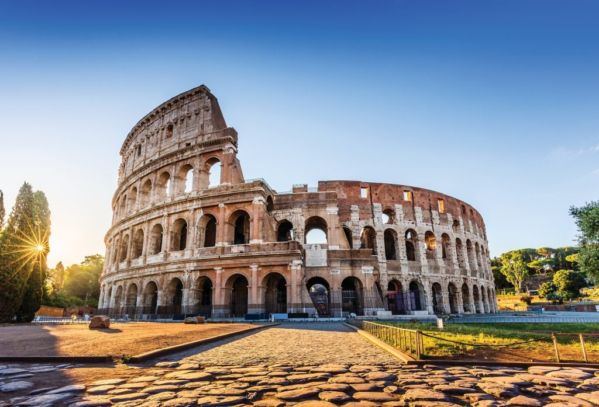

🏛️ อารยธรรมโรมัน

อารยธรรมโรมันเริ่มต้นขึ้นบริเวณคาบสมุทรอิตาลี และต่อมาได้ขยายอำนาจจนกลายเป็นจักรวรรดิขนาดใหญ่ ครอบคลุมพื้นที่ส่วนใหญ่ของยุโรป บริเวณทะเลเมดิเตอร์เรเนียน และบางส่วนของเอเชียและแอฟริกา
ชาวโรมันมีความสามารถด้านการปกครอง กฎหมาย วิศวกรรม และสถาปัตยกรรม มีการสร้างถนน สะพาน ระบบส่งน้ำ และอาคารขนาดใหญ่ สิ่งก่อสร้างเหล่านี้แสดงให้เห็นถึงความก้าวหน้าทางเทคโนโลยีของโรมัน
กฎหมายโรมันมีอิทธิพลต่อระบบกฎหมายของหลายประเทศในเวลาต่อมา นอกจากนี้ภาษาละตินและวัฒนธรรมโรมันยังส่งผลต่อภาษา ศิลปะ สถาปัตยกรรม และการเมืองของยุโรป แม้จักรวรรดิโรมันตะวันตกจะล่มสลายใน ค.ศ. 476 แต่มรดกของโรมันยังคงมีอิทธิพลต่อโลกปัจจุบัน